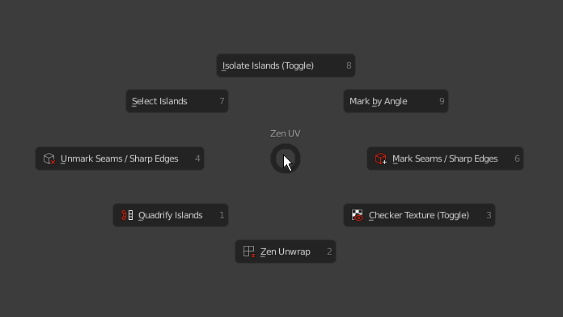

Pie Menu

Zen Unwrap 
- Default — Zen Unwrap. Mark selected edges/faces as Seams and/or Sharp edges and Unwrap by Marked edges after.
ALT— Pack all Islands.
Mark by Angle
- Default — Setup Auto Seams.
Mark Seams/Sharp edges 
- Default — Mark selected edges or face borders as Seams and/or Sharp edges.
CTRL— Tag selected Islands as Finished.
Unmark Seams/Sharp edges 
- Default — Unmark selected edges or face borders as Seams and/or Sharp edges.
ALT— Unmark All - Remove all the Seams and/or Sharp edges from the mesh.CTRL— Tag Unfinished - Tag selected Islands as Unfinished.
Select Islands
- Default — Select Islands by selected edge/face of the Islands.
ALT— Select Overlapped Islands.CTRL— Select Flipped Islands.SHIFT- Select Similar Islands.
Isolate Islands (Toggle)
- Default — Isolate Islands (Toggle) by selected edge/face of the Islands.
Quadrify Islands 
- Default — Straighten rectangular-shaped Islands.
CTRL— Relax(beta) - Relax Selected Islands.
Checker Texture (Toggle) 
- Default — Add Checker Texture to the mesh (Toggle).
ALT— Display Stretch Map. Display an angle-based stretching map.CTRL— Display Finished Islands (Toggle).